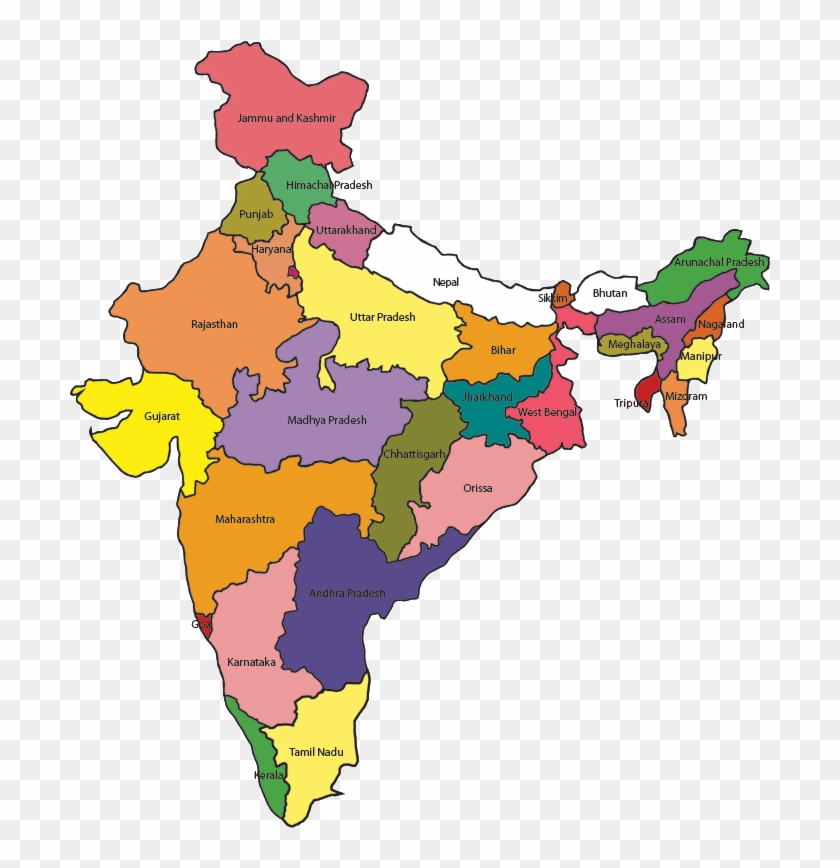

Republic of India

India is the Seventh Largest country in the world by geographical area, the second most populous
country with over 1.2 billion people, and the most populous democracy in the world. India is a federal
constitutional Republic with a parliamentry democracy consisting of 28 states and 7 Union
Terrirories.
Features
- Population - 1,028,610,328 (2001 census).
- Capital - New Delhi
- Largest City - Mumbai
- Currency - Indian Rupee.
- Time Format - IST (UTC + 5:30)
- National Sport - Hockey
- Current PM - Manmohan Singh
- Current President - Prathiba Patil
To view the details of states please click on the specified area in the map!!